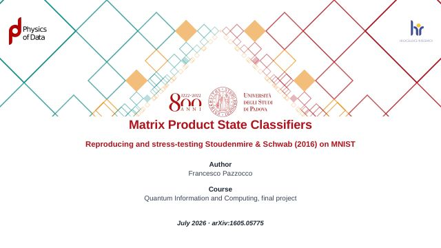
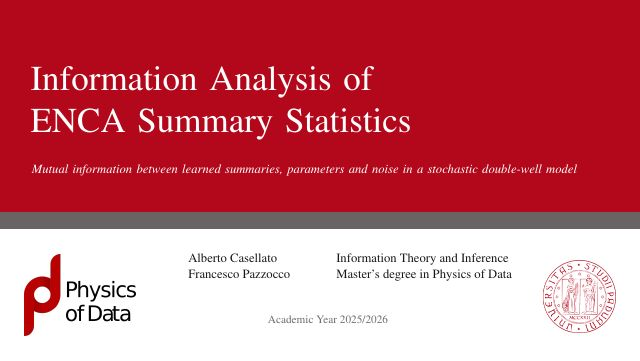
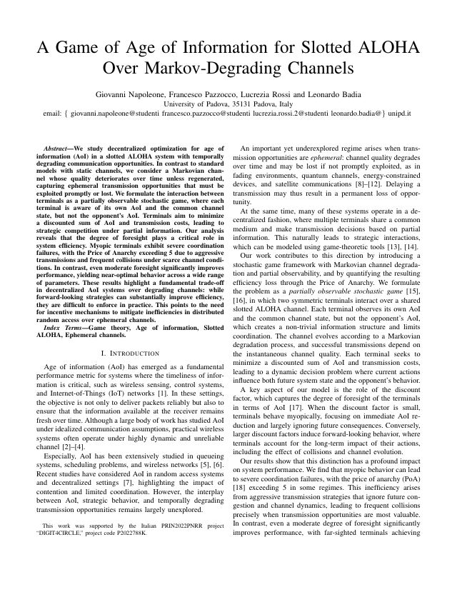

I study machine learning, probabilistic modelling and scientific computing, from CUDA kernels and
distributed pipelines to training and locally serving language models. My thesis, supervised by
Prof. Simone Montangero and Dr. Simone Notarnicola (Quantum Computing and Simulation group), is on
tensor-network readout heads for joint prediction on top of language-model encoders.

ViT vs ResNet in class-incremental continual learning
PyTorch · NNDL project · with A. Casellato
ResNet-18 and ViT-Small trained from scratch on Split-CIFAR-100 with fine-tuning, EWC and Experience Replay; accuracy, CKA and weight-drift analysis of failure modes.
RBM inference accelerator on FPGA
VHDL · Vivado · Arty A7-100T
RBM (784×128, Q8.8) inference in VHDL with 16 parallel MAC units, a sigmoid look-up table and a UART interface; self-checking testbenches, weights trained in PyTorch and uploaded over UART.

Matrix Product State classifiers
Python · tensor networks · QIC final project
Reproducing and stress-testing Stoudenmire & Schwab (2016): MPS classifiers on MNIST and CIFAR-10 built with the group’s qchaitea tensor-network library, with ablations on site ordering, initialisation and sweep scheme.

Information content of ENCA summary statistics
Python · information theory · with A. Casellato
Mutual information between learned summaries, parameters and noise in a stochastic double-well model.

Anomaly detection and predictive maintenance
Python · Dask · CloudVeneto · team of 4
Distributed analysis of industrial refrigeration sensor data (5 GB) on a Dask cluster: ON/OFF anomaly scoring, correlation with load and temperature, random-forest alarm prediction, scaling benchmarks.

Time-scale correction of δ18O data
R · Stan · Bayesian inference · team of 3
Bayesian inference of constant and time-dependent time-scale parameters on a radio-nuclide δ18O record, with an Ornstein–Uhlenbeck model for time intervals.

Age of Information for slotted ALOHA
Game theory · European Wireless 2026
Decentralised AoI optimisation as a partially observable stochastic game over Markov-degrading channels.
Tensor-network readout heads for joint prediction
PyTorch · MSc thesis (in progress)
MPS/TTN heads that model the joint distribution of many answers computed from shared encoder states, compared with independent and simpler joint baselines.
Plankton community structure with RBMs
Python
Restricted Boltzmann Machine on five years of high-frequency plankton monitoring data from Lake Greifen.
N-body simulation on GPU
C++ · CUDA
Direct-summation Newtonian N-body code parallelised in CUDA.
Fake-news detection
R
Comparison of Naive Bayes implementations for text classification, with confidence intervals.
G. Napoleone, F. Pazzocco, L. Rossi, L. Badia. A Game of Age of Information for Slotted ALOHA
over Markov-Degrading Channels. Proc. European Wireless 2026.